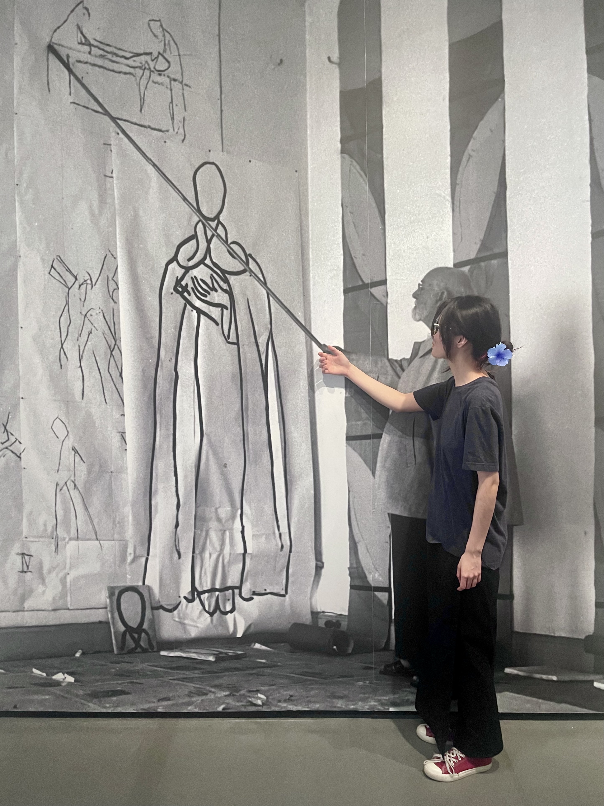

Photo by Yona Liu
吕奕蒙 Lyu, Yimeng
Interdisplinary researcher, artist and designer.
Originally from Taiyuan, Shanxi; based in Baltimore.
BFA, School of the Museum of Fine Arts at Tufts University, 2024
MHS, Johns Hopkins Bloomberg School of Public Health [In Progress]
Yimeng was a Summer Scholar at Tufts, a research assistant at SUSTech University School of Public Health and Emergency Management, and recently presented original research at the HBS Symposium at Johns Hopkins.
Yimeng's artwork has been shown at Tufts University Art Galleries, Boston Art Book Fair, Beijing ABC Open M, and ShanghART in Shanghai.
Yimeng has worked in editorial and infographic design at Tufts Observer, Brigham and Women’s Hospital in Boston, PETITREE Gallery in Shenzhen, and as a freelancer.